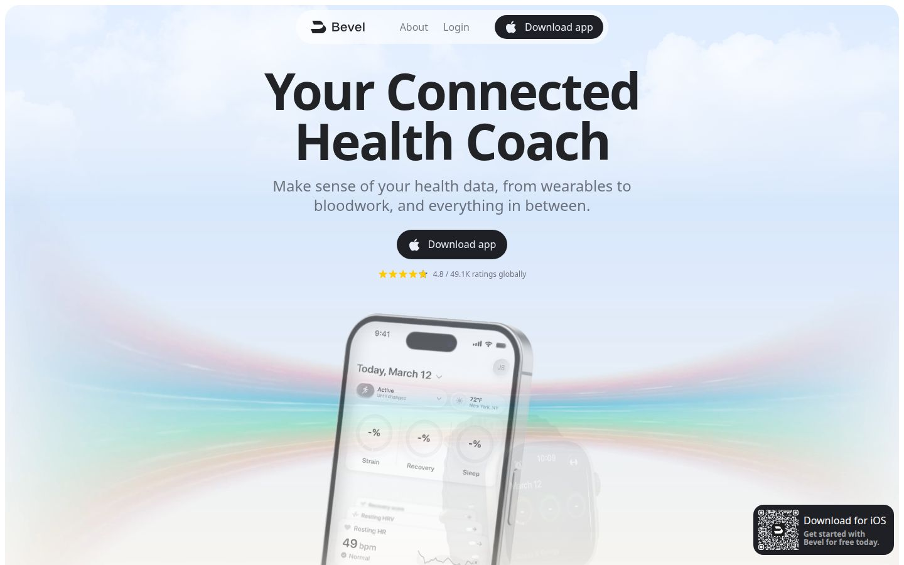
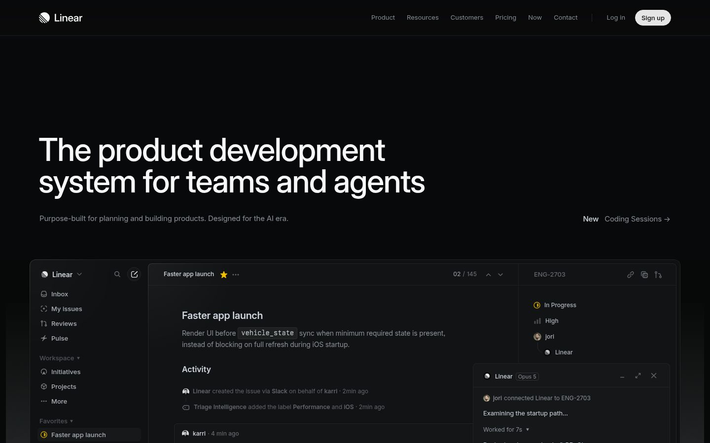
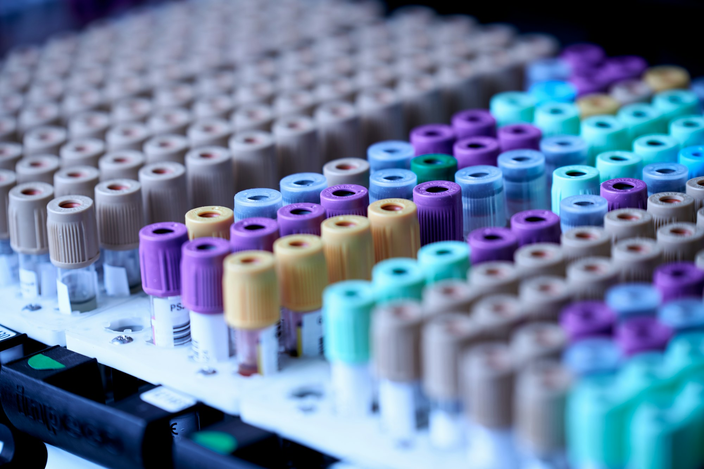
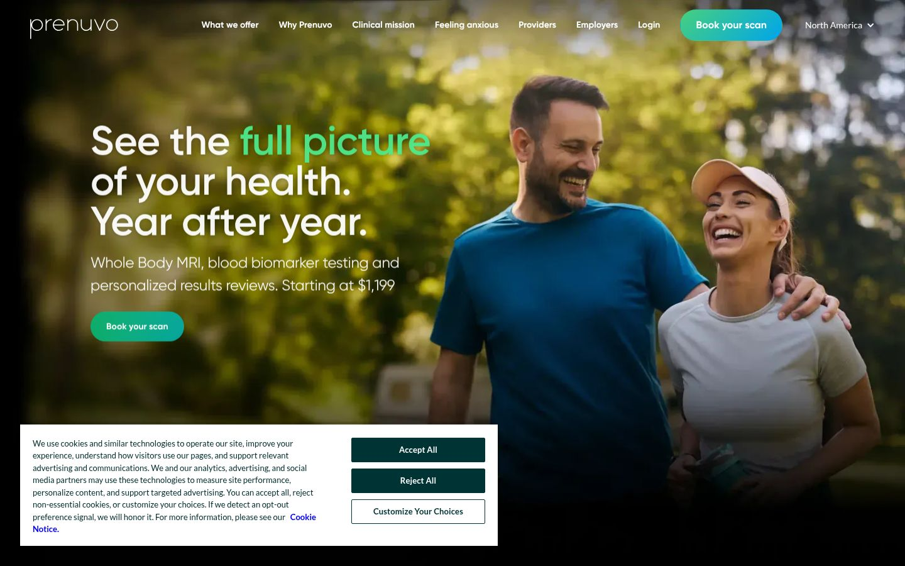

Vorsorge für Teams · ärztlich begleitet
Blutwerte, Schlaf, Aktivität und biologisches Alter — als Programm für Ihr Unternehmen.
Methode
38 Werte, zweimal im Jahr — abgenommen vor Ort, ausgewertet von Ärztinnen und Ärzten.
Jede Nacht, vom eigenen Wearable — Dauer, Regelmäßigkeit, Erholung.
Schritte, Training, Alltag — fortlaufend, ohne Wettbewerb.
Ein Wert, der alles zusammenfasst — und sich bewegen lässt.
Programm
Kein Marketing-Screenshot — die Ansicht, die Mitarbeitende jeden Morgen öffnen. Beispieldaten.
kalendarisch 44,6
Ø 7,1 h
Ø 8 412 Schritte
Dichte-Referenzen aus dem 150er-Korpus — Mockup-Maßstab, nicht Lumen:


Beweisstück
Eine Seite für die Person, die Sie intern überzeugen müssen: was gemessen wird, wie das Jahr läuft, was Arbeitgeber sehen — und was nicht.
Vorsorge für Teams — was Lumen misst, und was nicht.
38 Blutwerte (2× jährlich), Schlaf und Aktivität vom eigenen Wearable, biologisches Alter als Verlaufswert.
Blutabnahme vor Ort, Ergebnisse im ärztlichen Gespräch, dazwischen die App — freiwillig, im privaten Konto.
Anzahl aktiver Lizenzen und anonyme Trends, sobald die Gruppengröße Anonymität trägt. Keine Namen, keine Einzelwerte — technisch ausgeschlossen.

Symbolbilder — Unsplash, gestellte Szenen.
Datenschutz
Die Trennung ist Architektur, nicht Versprechen: Einzeldaten liegen im privaten Konto, einen Arbeitgeber-Zugriff gibt es nicht.
Infrastruktur erfüllt DSGVO und EU AI Act (Stand 08/2026) — prüfbar im Gespräch, kein Gütesiegel.
Zwei Pfade
Für Arbeitgeber
Budget, Lizenzen, ein Ansprechpartner — mehr braucht es von Ihrer Seite nicht.
Gespräch vereinbarenFür Mitarbeitende
Die Teilnahme ist freiwillig — Ihr Konto gehört Ihnen, nicht der Firma.
Konto aktivierenGrenzen
30 Minuten mit uns — danach wissen Sie, ob Lumen zu Ihrem Unternehmen passt.
Gespräch vereinbarenVorsorge mit Methode
Wir begleiten sie — ärztlich, messbar, für Ihr Team.
Individuelle Werte bleiben individuell — auch gegenüber dem Arbeitgeber.
Methode
38 Werte, zweimal im Jahr — abgenommen vor Ort, ausgewertet von Ärztinnen und Ärzten.
Fortlaufend vom eigenen Wearable — ohne Rangliste, ohne Wettbewerb.
Ein Verlaufswert als Kompass — er fasst zusammen, was sich ändert.
Ergebnisse werden besprochen, nicht zugestellt.
„Vorsorge ist keine Kampagne. Sie ist ein Rhythmus."
— Arbeitsthese, Lumen
Symbolbilder — Unsplash, gestellte Szenen.
Programm
Zwei Oberflächen, ein Konto: die App für jeden Morgen, der Bericht für das ärztliche Gespräch. Beispieldaten.
Guten Morgen, Jonas.
7 h 24 min
4 812 Schritte
Nächste Abnahme: mit dem Herbst-Termin — Erinnerung kommt aus der App.
Dichte-Referenzen aus dem 150er-Korpus — Mockup-Maßstab, nicht Lumen:

Beweisstück
Für den Flurfunk und für Finance — zum Nachlesen und Weiterleiten.
Datenschutz
Die Trennung ist Architektur, nicht Versprechen — es gibt keinen Arbeitgeber-Zugriff auf Einzeldaten.
Daten bleiben in der EU — DSGVO- und AI-Act-konform (Stand 08/2026), prüfbar im Gespräch.
Zwei Pfade
Für Arbeitgeber
Budget, Lizenzen, ein Ansprechpartner — mehr braucht es von Ihrer Seite nicht.
Gespräch vereinbarenFür Mitarbeitende
Die Teilnahme ist freiwillig — Ihr Konto gehört Ihnen, nicht der Firma.
Konto aktivierenGrenzen
Ein Pilot mit einem Team reicht, um zu sehen, ob Lumen trägt.
Gespräch vereinbaren